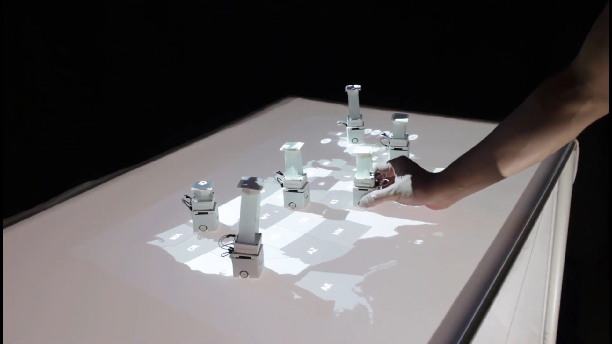
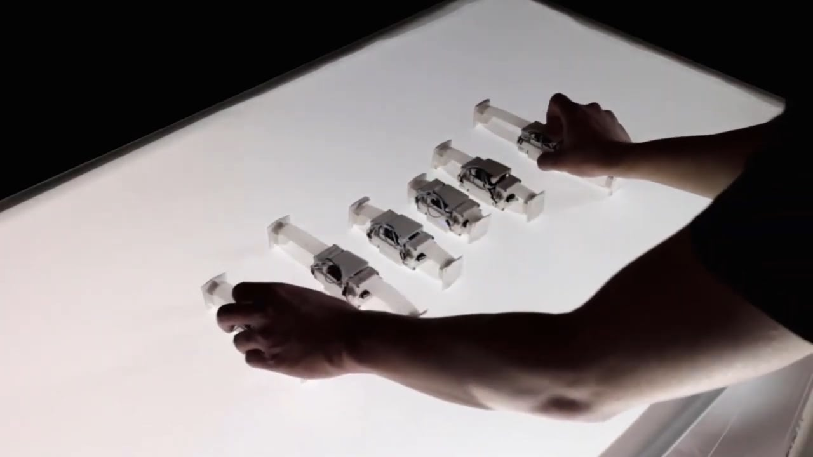

Start with a thing that refuses to behave.
A prototype is an argument you can put your hands on. Build the smallest version of the new action and see what survives.
Explore the research- Build a small moving unit.
- Arrange units into a useful shape.
- Observe where control becomes hard.

